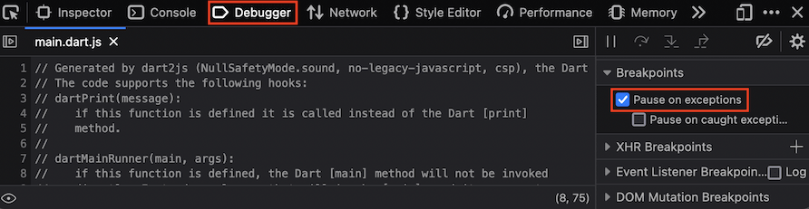

Debugging Dart web apps
You can use a Dart IDE, Dart DevTools, and browser tools such as Chrome DevTools to debug your Dart web apps.
- To debug your app's logic, use your IDE, Dart DevTools, or browser tools. Dart DevTools has better support than browser tools for inspecting and automatically reloading Dart code.
- To debug your app's appearance (HTML/CSS) and performance, use your IDE or browser tools such as Chrome DevTools.
Overview
#To serve your app, use webdev serve (either at the command line or through your IDE) to start up the Dart development compiler. To enable Dart DevTools, add the --debug or --debug-extension option (at the command line or through your IDE):
$ webdev serve --debugWhen running your app using the --debug flag of webdev, you can open Dart DevTools by pressing Alt+D (or Option+D on macOS).
To open Chrome DevTools, press Control+Shift+I (or Command+Option+I on macOS). If you want to debug your app using Chrome DevTools, you can use source maps to display your Dart source files instead of the JavaScript that the compiler produces. For more information on using Chrome DevTools, see the Chrome DevTools documentation.
To use the Dart DevTools or Chrome DevTools to debug a Dart web app, you need the following software:
- Google Chrome.
- Dart SDK, version 2.0.0 or higher.
- One of the following development environments:
- Command-line: Dart command-line tool packages such as webdev (required for both Dart and Chrome DevTools) and devtools (required for Dart DevTools).
or - A Dart IDE or editor that supports web development.
- Command-line: Dart command-line tool packages such as webdev (required for both Dart and Chrome DevTools) and devtools (required for Dart DevTools).
- A Dart web app to debug.
Getting started with Dart DevTools
#This section leads you through the basics of using Dart DevTools to debug a web app. If you already have an app that's ready to debug, you can skip creating the test app (step 1), but you'll need to adjust the instructions to match your app.
Optional: Clone the webdev repo, so you can use its example app to play with Dart DevTools.
Optional: Install the Dart Debug Extension so that you can run your app and open the Dart DevTools in an already-running instance of Chrome.
In your app's top directory, run
dart pub getto get its dependencies.$ cd example $ dart pub getCompile and serve the app in debug mode, using either your IDE or
webdevat the command line.If you're using webdev at the command line, the command to use depends on whether you want (or need) to run the app and debugger in an already-running instance of Chrome.
If you have Dart Debug Extension installed and want to use an existing instance of Chrome to debug:
$ webdev serve --debug-extensionOtherwise, use the following command, which launches a new instance of Chrome and runs the app:
$ webdev serve --debug
If your app isn't already running, open it in a Chrome browser window.
For example, if you usewebdev serve --debug-extensionwith no arguments, open http://127.0.0.1:8080.Open Dart DevTools to debug the app that's running in the current window.
If Dart Debug Extension is installed and you used the
--debug-extensionflag towebdev, click the Dart logo at the top right of the browser window.If you used the
--debugflag towebdev, press Alt+D (or Option+D on macOS).
The Dart DevTools window comes up and displays the source code for your app's main file.
Set a breakpoint inside a timer or event handler by clicking to the left of one of its lines of code.
For example, click the line number for the first line inside an event handler or timer callback.Trigger the event that causes the function call. Execution stops at the breakpoint.
In the Variables pane, inspect the values of variables.
Resume script execution, and trigger the event again or press Pause. Execution pauses again.
Try stepping through code line-by-line using the Step In, Step Over, and Step Out buttons.
Change your source code and reload the Chrome window that's running the app. The app quickly rebuilds and reloads. Until issue 1925 is fixed, you lose your breakpoints when reloading the app.
Click the Logging button to see stdout, stderr, and system logs.
Getting command-line tool packages
#If you're using the command line instead of an IDE or Dart-enabled editor, then you need the webdev tool. Dart DevTools is provided by the SDK.
$ dart pub global activate webdevIf your PATH environment variable is set up correctly, you can now use these tools at the command line:
$ webdev --help
A tool to develop Dart web projects.
...For information on setting PATH, see the dart pub global documentation.
Whenever you update the Dart SDK, update the tools by activating them again:
$ dart pub global activate webdev # update webdevDebugging production code
#This section gives tips for debugging production-compiled code in Chrome, Firefox, and Safari. You can only debug JavaScript code in browsers that support source maps such as Chrome.
Whichever browser you use, you should enable pausing on at least uncaught exceptions, and perhaps on all exceptions. For frameworks such as dart:async that wrap user code in try-catch, we recommend pausing on all exceptions.
Chrome
#To debug in Chrome:
- Open the Developer Tools window, as described in the Chrome DevTools documentation.
- Turn on source maps, as described in the video SourceMaps in Chrome.
- Enable debugging, either on all exceptions or only on uncaught exceptions, as described in How to set breakpoints.
- Reload your app.
Edge
#To debug in Edge:
- Update to the latest version of Edge.
- Load Developer Tools (F12).
- Reload the app. The debugger tab shows source-mapped files.
- Exception behavior can be controlled through Ctrl+Shift+E; the default is Break on unhandled exceptions.
Firefox
#To debug in Firefox:
Open the Web Developer Tools window, as described in the Firefox developer tools documentation.
Enable Pause on exceptions, as shown in the following figure:
Reload the app. The Debugger tab shows source-mapped files.
Safari
#To debug in Safari:
- Turn on the Develop menu, as described in the Safari Web Inspector Tutorial.
- Enable breaks, either on all exceptions or only on uncaught exceptions. See Add a JavaScript breakpoint under Safari Developer Help.
- Reload your app.
Resources
#To learn more, see the following:
- Documentation for your IDE
- Dart DevTools documentation
- webdev tool documentation
- webdev package documentation
Unless stated otherwise, the documentation on this site reflects Dart 3.6.0. Page last updated on 2024-05-29. View source or report an issue.